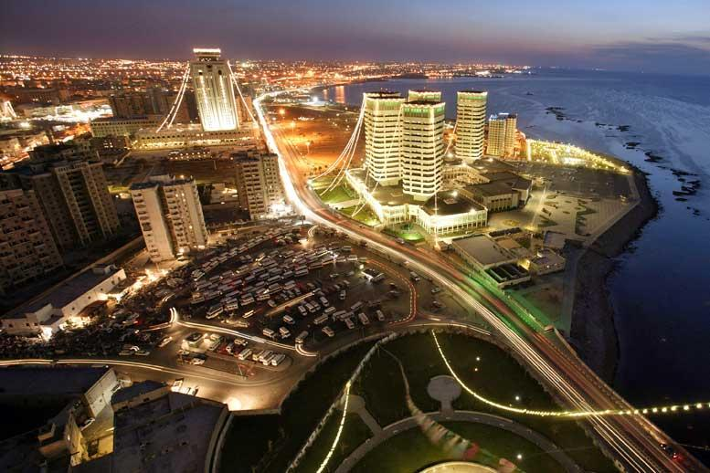
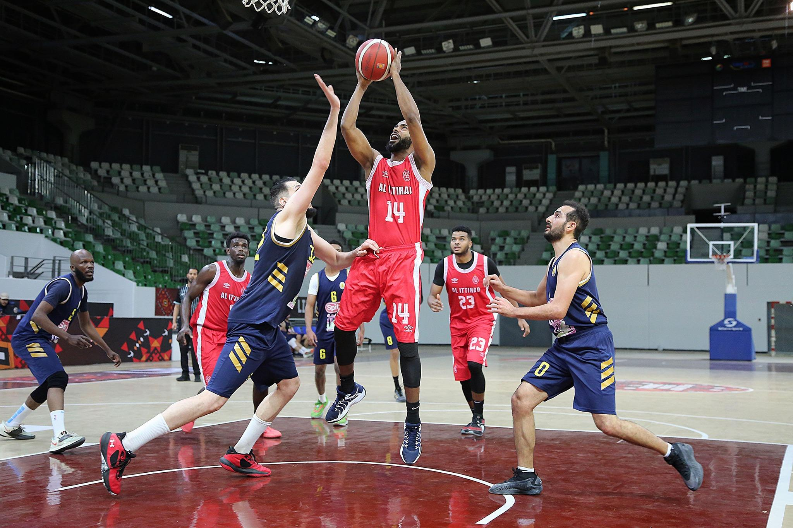
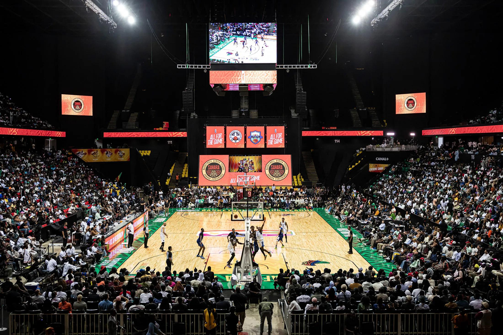

TRIPOLI
هنا تبدأ الرحلة
21—25 OCTOBER 2026

طرابلس تستضيف أفريقيا
من طرابلس إلى القارة. خمسة أيام تجمع عشرة أندية على طريق واحد.
لحظة تقديم صاحب الأرض تليها مساحة البطولة الأفريقية؛ القصص والصور النهائية تُعتمد قبل النشر.
أول فريقين من كل مجموعة إلى Elite 16.
بطاقة BAL تُحسم في المرحلة التالية.
هنا تبدأ الرحلة
21—25 OCTOBER 202610 أندية · مجموعتان
GROUP A / GROUP Bمن كل مجموعة
FOUR PLACES. ONE NEXT STEP.المرحلة التالية
THE RACE CONTINUESالوجهة القارية
QUALIFICATION STILL TO BE EARNEDالوصول إلى Elite 16 لا يعني التأهل إلى BAL. الحالات هنا معاينة للمراحل قبل انطلاق البطولة.

| Q1 | Q2 | Q3 | Q4 | TOTAL | |
|---|---|---|---|---|---|
| AL ITTIHAD | 18 | 23 | 19 | 18 | 78 |
| STADE MALIEN | 20 | 16 | 18 | 18 | 72 |
النتيجة أولًا. تفاصيل المباراة تليها، دون منافسة بصرية.